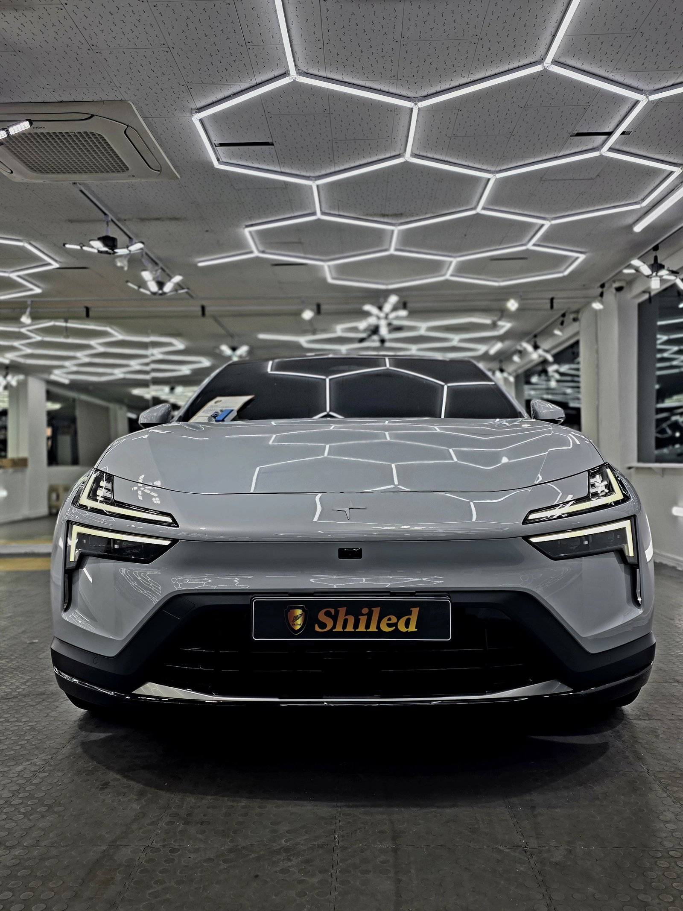
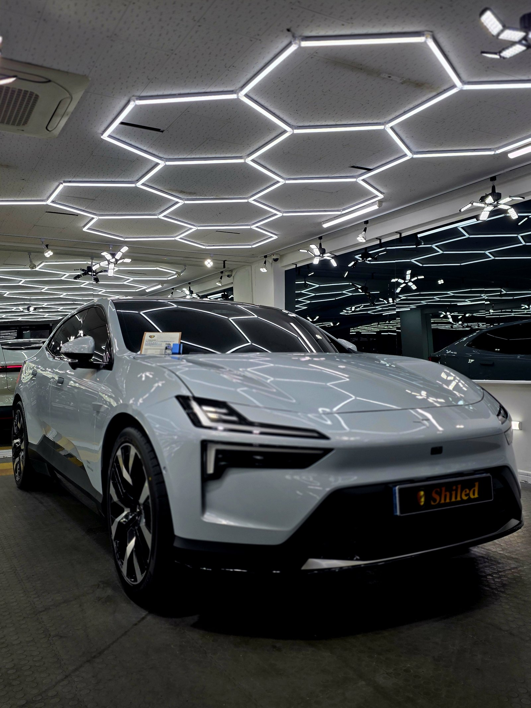
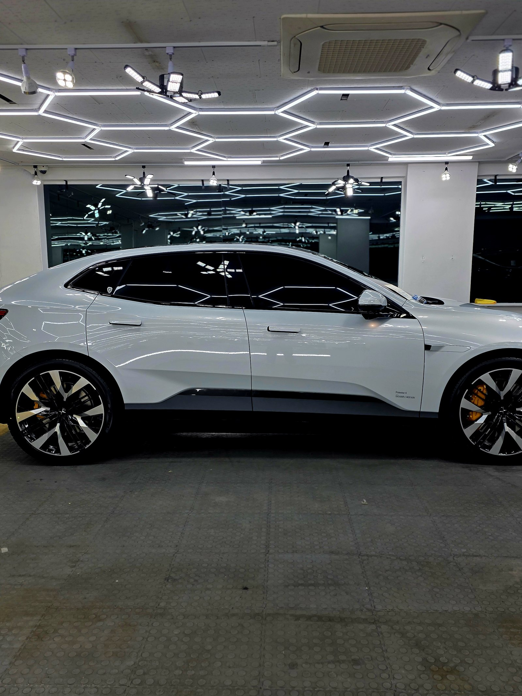
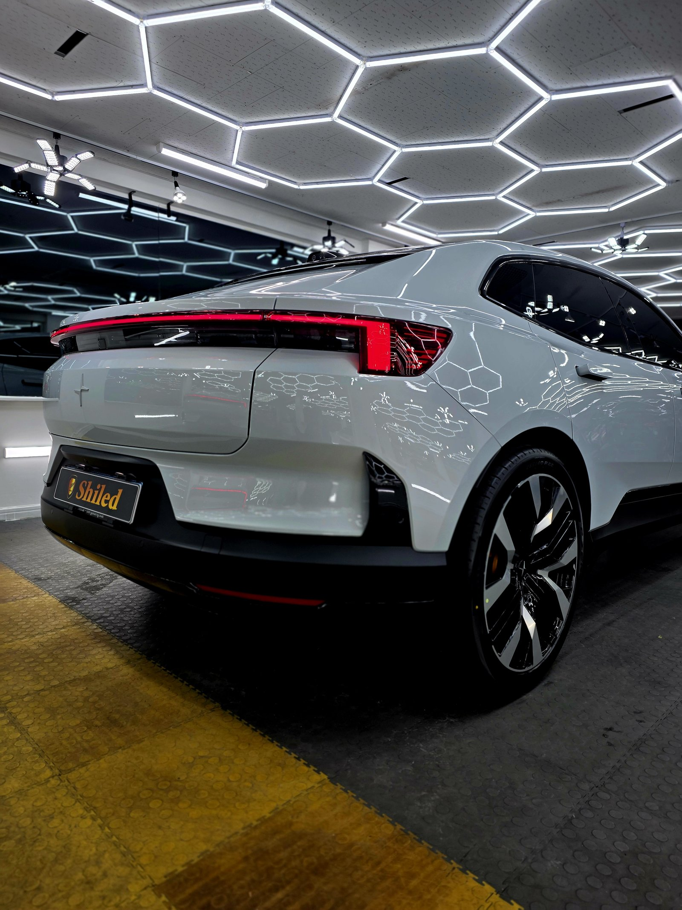
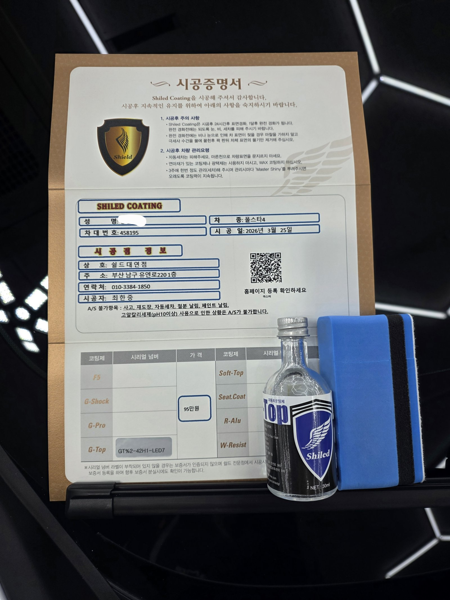

폴스타4 그레이입니다. 아직 출고 전, 새 차입니다.
이 차는 출고 전에 G-TOP 유리막코팅으로 진행했습니다.

전기차 신차도 출고 전 코팅이 필요한 이유
도장 관리 원리는 전기차도 내연기관차와 다르지 않습니다.
도장면이 가장 깨끗한 신차 상태일 때 코팅막을 입혀두면, 운행·세차로 오염이 쌓이기 전 처음 컨디션을 더 오래 지킬 수 있습니다. 그래서 쉴드광택은 출고 전 신차 시공을 맡아 진행합니다.

왜 G-TOP만 올렸나
G-TOP은 발수력과 방오성을 끌어올리는 코팅입니다.
밝은 그레이 톤은 검정보다 오염이 잘 안 보인다고 생각하기 쉽지만, 실제로는 물자국과 먼지가 묻으면 그대로 티가 납니다. G-TOP을 올리면 물방울이 표면에 오래 머물지 못하고 굴러떨어지면서 오염 물질을 함께 씻어내, 세차 한 번에도 훨씬 깨끗하게 관리됩니다.

기술자의 팁
신차라고 바로 코팅을 올리지 않습니다. 운송·보관 중 묻은 미세 오염을 디테일링 세차와 탈지로 걷어낸 뒤에 올립니다. 깨끗한 바탕 위에 올려야 코팅이 제대로 밀착합니다.

시공증명서를 함께 드립니다
모든 시공 차량에 시공증명서를 드립니다.
차종·시공일·코팅제 시리얼 번호가 적혀 있고, 홈페이지에 등록해 보증을 받으실 수 있습니다. 이 차는 G-TOP 코팅으로 기록돼 있습니다.

차종·시공일·코팅제 시리얼이 기재된 시공증명서
자주 묻는 질문
Q. 전기차도 출고 전에 코팅을 해야 하나요?
A. 네, 도장 관리 원리는 내연기관차와 똑같습니다. 도장면이 가장 깨끗한 신차 상태일 때 코팅막을 입혀두면, 오염이 쌓이기 전 처음 컨디션을 더 오래 지킬 수 있습니다.
Q. 폴스타4에는 왜 G-TOP을 올렸나요?
A. 이 차는 G-TOP으로 진행했습니다. G-TOP은 발수력과 방오성을 끌어올리는 코팅입니다. 물자국·먼지가 덜 붙고 세차 때 쉽게 씻겨나가는 게 실용적입니다.
Q. 신차코팅도 전처리를 하나요?
A. 합니다. 신차라도 운송·보관 중 미세 오염이 묻습니다. 디테일링 세차와 탈지로 표면을 정리한 뒤 코팅을 올려야 제대로 밀착합니다.
Q. 쉴드광택 위치와 예약은 어떻게 하나요?
A. 부산 남구 유엔로220 1F 쉴드광택입니다. 예약·상담은 010-3384-1850, 대표 최한중이 직접 상담하고 책임 시공합니다.
전기차든 내연기관차든, 새 차일수록 시작점이 다릅니다.
제품을 직접 만드는 사람이 직접 시공합니다.
부산에서 신차코팅을 고민 중이시면 편하게 연락 주십시오.
어떤 차를 타냐보다 어떻게 타냐가 중요합니다~!
시공 중에는 전화를 받지 못할 때가 많습니다.
카카오톡으로 차종과 원하시는 시공을 남겨주시면 확인 후 답변드립니다.
쉴드광택 · 부산 남구 유엔로220 1F · 대표 최한중